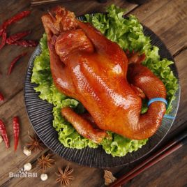
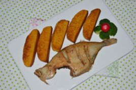
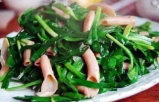

沟帮子熏鸡：沟帮子熏鸡始创于清光绪十五年，创始人尹玉成因行善机缘偶遇光绪御厨，得皇家宫廷熏鸡秘方，建熏鸡坊，名“沟帮子熏鸡”，凭十六道精细工序、三十种甄选配料，四代老汤，薪火传承，创“沟帮子熏鸡”百年老号，深受当地百姓及过往客商青睐，被誉为中国“四大名鸡”之首，蜚声四方。
咸鱼饼子：咸鱼饼子是北方沿海的特色传统名小吃 ，属于鲁菜系胶东帮中的大连菜。新鲜的海鱼用盐腌过，在阳光下晒干，然后放在铁锅里，搁少许油，煎得外焦里嫩，和玉米面饼子一起吃味道独特。渔家风味，咸鲜味美。独具特色的大连小吃依然离不开海的味道，它不仅鲜美可口，而且经济实惠。
韭菜炒海肠子：韭菜炒场子的做法非常简单，只要按照菜谱步骤一步一步您来一定会享受到一道美味菜肴，韭菜炒场子是中国菜系鲁菜菜系中很有特色的菜式之一，韭菜炒场子以海肠为主要材料。